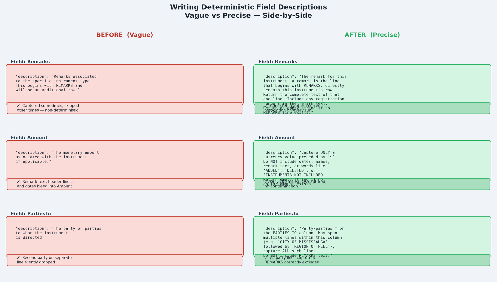

Series: Azure Content Understanding — Field Schema Design
- Part 1:
extractvsgenerate— choosing the right method - Part 2 (this article): Writing Deterministic Field Descriptions
- Part 3: The Boundary Problem — Too Much or Too Little
The Problem
A team had an extraction field for remarks in a document table. The description read:
"Remarks associated to the specific instrument type. This begins with REMARKS and will be an additional row in the document's table, but belonging to the same registration number, overlapping multiple columns in the document."
The extraction worked most of the time. But on certain documents — particularly when a remarks row happened to contain another registration number in its text — the field came back empty.
No code change. No model change. The word "RO993321" appearing inside a remarks line was enough to confuse the model into thinking it had found a new row rather than remark text.
The description wasn't wrong — it was just incomplete. It described the happy path but gave the model no guidance for edge cases. The fix was not a code change. It was a description rewrite.
What Makes a Description "Deterministic"?
A deterministic description is one that gives the model enough information to produce the same output every time it encounters the same input, regardless of edge cases in the document.
A vague description leaves the model to resolve ambiguity on its own. A deterministic description resolves every significant ambiguity explicitly.
There are five properties that separate vague descriptions from deterministic ones:
| Property | Vague | Deterministic |
|---|---|---|
| Anchor | "A row that belongs to this instrument" | "The line positioned directly beneath this instrument's row, same REG. NUM." |
| Scope | "The text of the remark" | "The complete text of that one line, reading left to right" |
| Inclusion rule | (silent) | "Include any registration numbers that appear in the remark text" |
| Exclusion rule | (silent) | "Do NOT include party names; those belong to a PARTIES column on a different line" |
| Null case | (silent) | "Return an empty string if this instrument has no REMARKS line" |
Before and After: Three Fields

Field 1: Remarks
Vague:
"description": "Remarks associated to the specific instrument type.
This begins with 'REMARKS' and will be an additional row in the
document's table, overlapping multiple columns."Problems:
- No anchor: which row, when there are many instruments?
- No inclusion rule: what if the remark text contains a number that looks like a new row?
- No null case: what should be returned when there is no remark?
Deterministic:
"description": "The remark for this instrument. A remark is the line
that begins with the word 'REMARKS:' positioned directly beneath this
instrument's row (same REG. NUM.). Return the complete text of that one
line, reading left to right to the end of the line, joining words that
are separated by column gaps into a single string. Include any
registration numbers that appear in the remark text. The remark NEVER
includes party or owner names; those belong to a PARTIES column on a
different line and must be excluded. Return an empty string if this
instrument has no REMARKS line."What changed: Added row anchor, explicit inclusion rule for embedded registration numbers, explicit exclusion rule for party names, and a null-case instruction.
Field 2: Amount
Vague:
"description": "The monetary amount associated with the instrument
if applicable."Problems:
- "If applicable" is ambiguous — the model may fill in remark text or header text that happens to sit in the same column band.
- No format constraint — what counts as a monetary amount?
- No exclusion — header lines like
** PRINTOUT INCLUDES ALL DOCUMENT TYPES **sit in the same region and can bleed in.
Deterministic:
"description": "The monetary amount associated with the instrument,
taken only from the AMOUNT column. Capture ONLY a currency value
(a figure preceded by a '$' sign, e.g. '$29,248,934' or '$557,997').
Do NOT include any non-monetary text such as dates, names, remark text,
or words like 'ADDED', 'DELETED', or 'INSTRUMENTS NOT INCLUDED'.
If the instrument has no dollar amount, return an empty string."What changed: Explicit format constraint ($ prefix), named examples of text to exclude, explicit null case.
Field 3: PartiesTo
Vague:
"description": "The party or parties to whom the instrument is directed."Problems:
- Does not mention that a single instrument may have multiple parties on separate lines.
- Does not specify what to do when a REMARKS row is visually adjacent.
Deterministic:
"description": "The party or parties to whom the instrument is directed,
taken from the PARTIES TO column. An instrument may list more than one
party on separate lines within this column (e.g. 'THE CORPORATION OF
THE CITY OF ACTON' followed by 'THE REGIONAL MUNICIPALITY'); capture
all such party lines for this instrument. Do NOT include any REMARKS text."What changed: Explicit multi-line rule, concrete example of multi-party layout, exclusion rule for REMARKS text.
The Five-Question Test
Before finalising any field description, run through this checklist:
- Anchor — Have I told the model exactly where in the document the value lives? (column name, row position, relationship to other rows)
- Scope — Have I told it how much to capture? (one line, one cell, one sentence, the full column)
- Inclusion — Are there unusual values that look wrong but should be captured? Have I named them?
- Exclusion — Are there values nearby that should not be captured? Have I named them explicitly?
- Null case — Have I told the model what to return when the value is absent?
Reinforcing Rules at Two Levels
For complex schemas, the same rule should appear at both the field level and the parent array/object level.
Consider a schema that extracts rows from a table. The table-level description governs what counts as a valid row. The field-level description governs what the field captures within a row. A rule that only appears at the field level may be ignored if the table-level logic has already made a conflicting decision.
Table-level (parent array):
"description": "A table of registered instruments. Some instruments
have an additional REMARKS row beneath them — do not create a separate
instrument entry for a REMARKS row. A REMARKS row may itself contain
registration numbers; these are part of the remark text and must NOT
be treated as a new row. Ignore any printout header lines."Field-level (Remarks):
"description": "...A remarks row often contains one or more registration
numbers as part of its text; these are part of the remark and do NOT
start a new row — still capture the entire remark line and never skip it..."Key Takeaways
- Vague descriptions work on the happy path and silently fail on edge cases.
- Deterministic descriptions explicitly handle anchoring, scope, inclusions, exclusions, and the null case.
- When a field behaves inconsistently, rewrite its description before changing any code or method.
- Use concrete named examples in descriptions —
'$29,248,934','REMARKS: RO993321'— rather than abstract categories. - Reinforce critical rules at both the parent (array/object) level and the child field level.